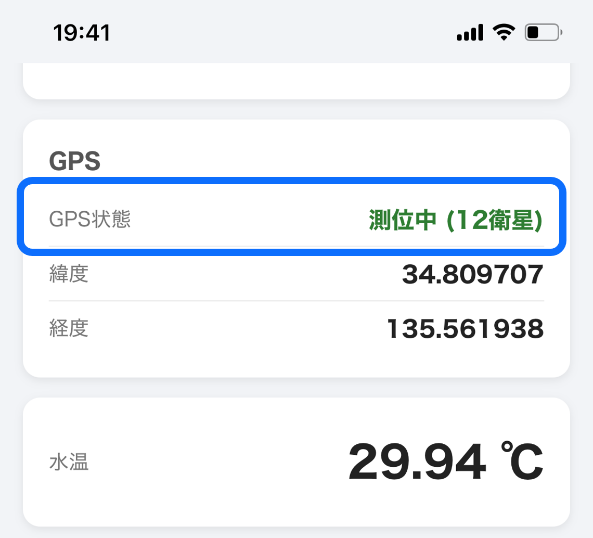
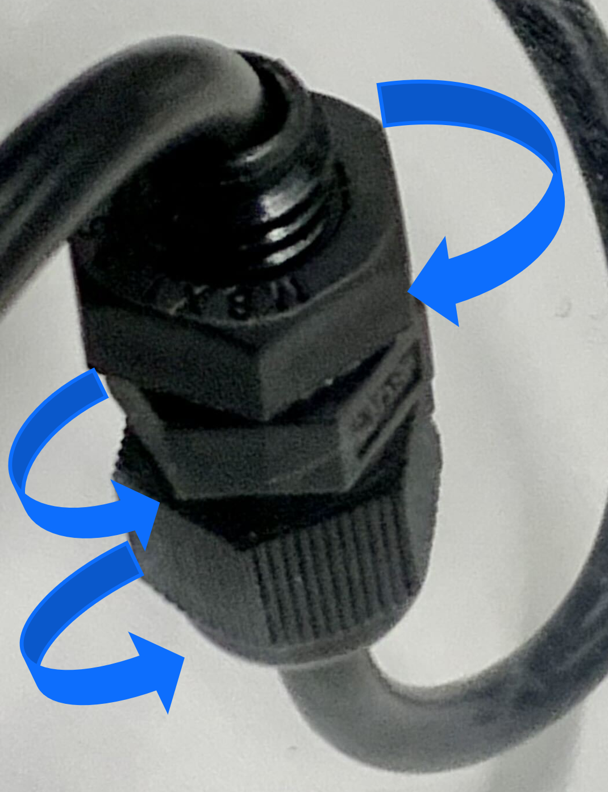
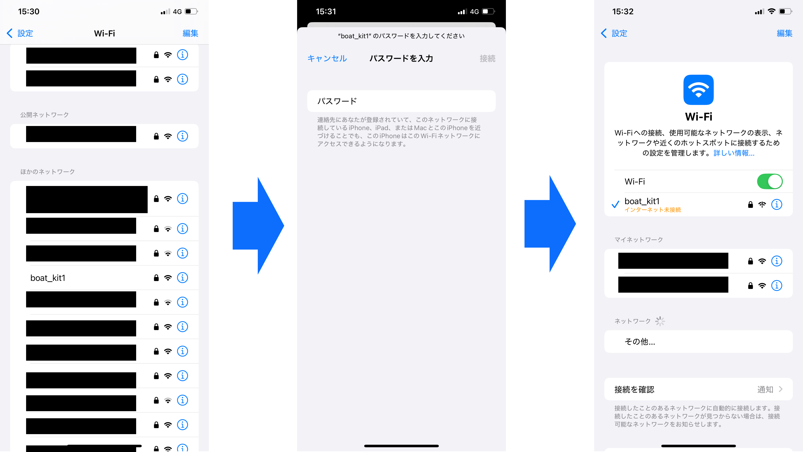
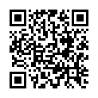
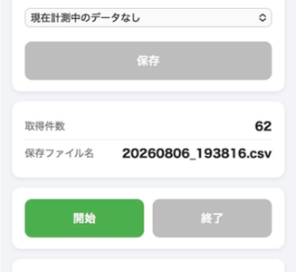

使用手順
- モバイルバッテリーとRaspberry Piを接続する
- スマートフォンをWi-Fiへ接続する
- Webアプリケーションを開く
- GPSの受信を確認する
- キットを密封する
- 計測を開始する
- 計測を終了し、ファイルを選択してデータを保存する
① モバイルバッテリーとRaspberry Piを接続する
モバイルバッテリーから延びているUSBタイプCのコードをRaspberry Piに接続します。 接続後、自動でシステムが起動します。 起動が完了するまで約1分お待ちください。 起動中はRaspberry PiのLEDが状態を示します。 赤色LEDが点灯していることを確認し、緑色LEDの点滅が終了したことを起動完了の目安としてください。

② GPS測位を確認する
Web画面に「GPS状態 測位中」と表示されることを確認してください。 電源接続後の初回測位には、数分かかる場合があります。 GPS取得前に計測を開始すると、正しい位置情報が記録されない場合があります。 GPSは防水ケースの蓋を閉じた状態でも受信できますが、電源接続後の初回測位は蓋を開けた状態の方が、よりスムーズに行える場合があります。

③ キットを密封する
防水ケースのフタを閉じます。パッキン(青四角)をしっかりと締め切ってください。 また、防水グランドに緩みがある場合は、十分に締め付けてください。


④スマートフォンをWi-Fiへ接続する
スマートフォンのWi-Fi設定から、使用するキットのアクセスポイントへ接続してください。
図5はiPhone 10の画面です。機種によってWi-Fi設定画面や操作方法は異なる場合があります。
① 「設定」からWi-Fi設定画面を開きます。
② 使用するキットに対応したアクセスポイントを選択します。
③ 下記のパスワードを入力して接続します。
④ 接続が完了したことを確認してください。
| キット | SSID | パスワード |
|---|---|---|
| キット1 | boat_kit1 | boat_kit3151 |
| キット2 | boat_kit2 | boat_kit3152 |
| キット3 | boat_kit3 | boat_kit3153 |

⑤ Webページを開く
Wi-Fi接続後、ブラウザを開き、以下のアドレスへアクセスしてください。
http://192.168.18.1:5000/
以下のQRコードからもアクセス可能です。

⑥ 計測を開始する
GPS取得後、「計測開始」ボタンを押してください。 計測中は1秒ごとに水温および位置情報が記録されます。

計測終了後
計測終了後は「計測停止」を押し、CSVデータをダウンロードしてください。 詳しい操作方法は「Web画面」のページを参照してください。